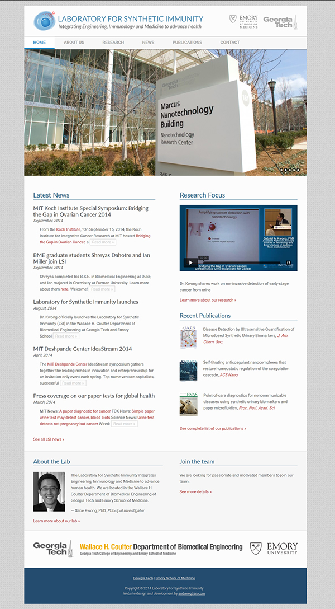
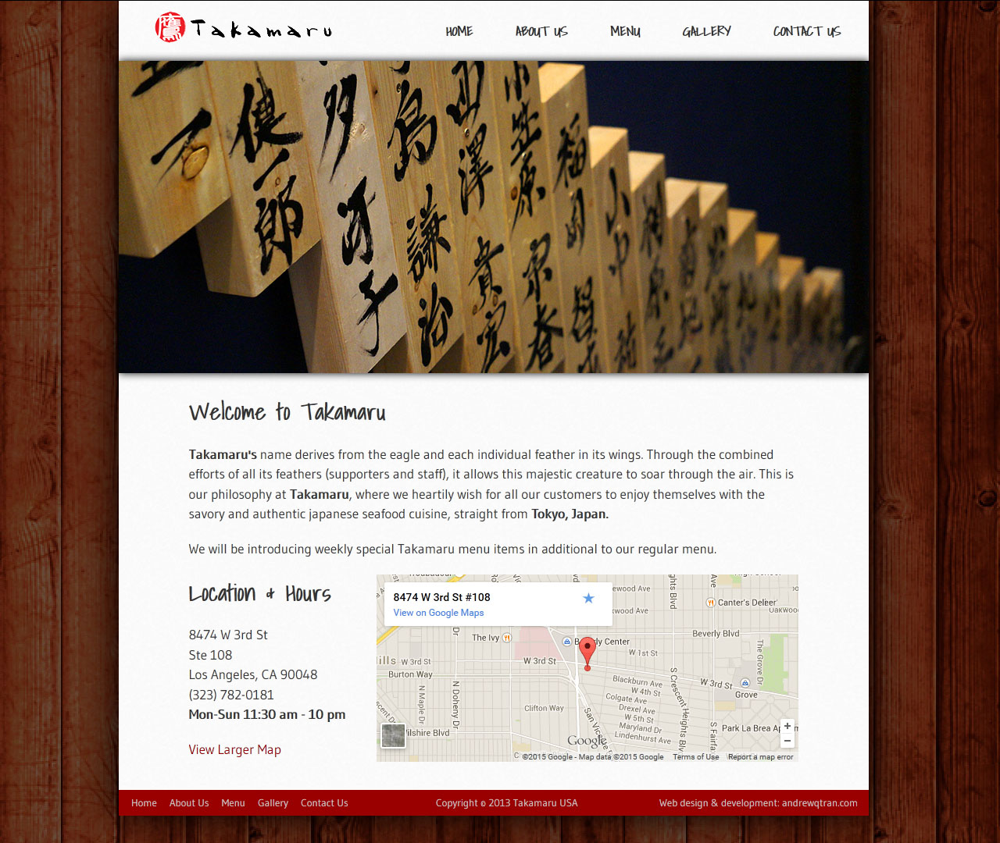
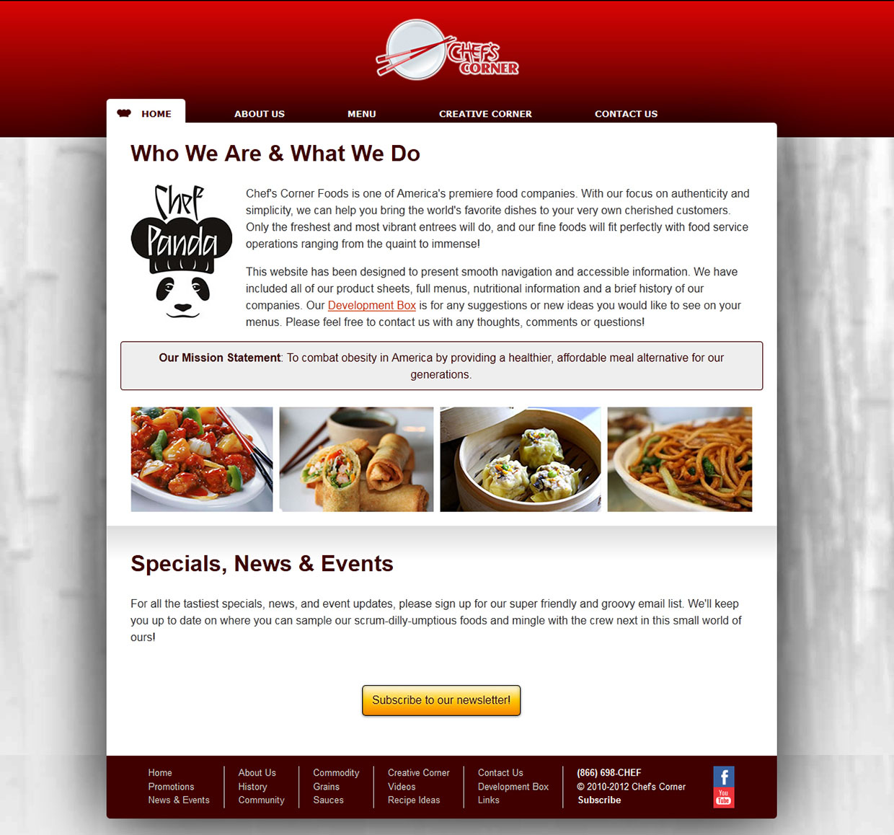

Summary
My experience with HTML started in 2004, when I built websites for local collegiate student organizations (and won some awards, too). Since then, I've taken on independent projects and grown my skills with each project (HTML/CSS, jQuery, WordPress, PHP, etc.). My clients came from from small biotech start-ups, e-commerce businesses, to academic institutions. At LONI, I produced a number of web designs, ranging from academic conference site to global research site.
Here are some selected websites I've designed and coded over the years.
ADNI - Alzheimer’s Disease Neuroimaging Initiative
I was tasked with redesigning the ADNI homepage for demonstration at a stakeholer's meeting. The objective was to increase usability and introduce responsive mobile designs. I moved essential elements to the front, after interviewing with users and researchers, along with analytics review. Redundant and less important items were removed from the home page.
Original design
OHBM - Organization for Human Brain Mapping
This is a thematic and modern, responsive, design for an international Human Brain Mapping conference to be held in Hawaii.
Style guide
Tablet design
Mobile design
Laboratory for Synthetic Immunity
2014 - Customized Wordpress site
Takamaru
2013 - Japanese Restaurant
Chef's Corner Foods
2012 - Asian food services
UCLA Circle K
2005 - Collegiate service club
This website still works very well. Feel free to check it out.